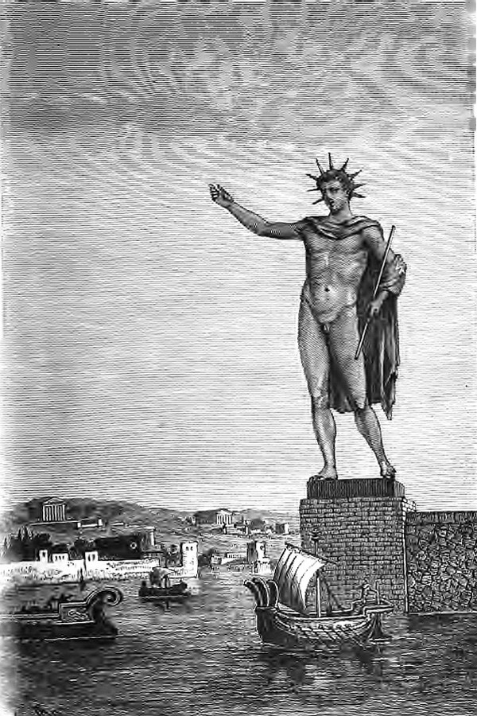

The Colossus of Rhodes /ro?dz/ was a statue of the Greek titan-god of the sun Helios, erected in the city of Rhodes, on the Greek island of the same name, by Chares of Lindos in 280 BC. One of the Seven Wonders of the Ancient World, it was constructed to celebrate Rhodes' victory over the ruler of Cyprus, Antigonus I Monophthalmus, whose son unsuccessfully besieged Rhodes in 305 BC.
According to most contemporary descriptions, the Colossus stood approximately 70 cubits, or 33 metres (108 feet) high—the approximate height of the modern Statue of Liberty from feet to crown—making it the tallest statue of the ancient world. It was destroyed during the earthquake of 226 BC, and never rebuilt.
